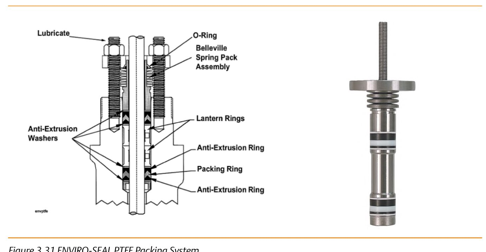

How ENVIRO-SEAL Packing Systems Work

- 1ENVIRO-SEAL PTFE — a live-loaded spring pack holds sealing force on a PTFE set; sliding-stem or rotary, to 750 psi / 232°C (450°F)
- 2ENVIRO-SEAL Duplex — PTFE plus graphite; sliding-stem only, fire-tested (API 589), to 232°C (450°F)
- 3ENVIRO-SEAL Graphite ULF — very thin PTFE layers inside the graphite rings; environmental service above 232°C (450°F)
- 4ENVIRO-SEAL Graphite (rotary) — the same live-loaded mechanism built for rotary valves, −6 to 316°C (20 to 600°F) or where fire safety is a concern
After Control Valve Handbook, 6th ed., Fig. 3.31 — used directly; Duplex, Graphite ULF, and rotary Graphite variants named from Figs. 3.32–3.34. Component Index: cvh-cmp-enviroseal-ptfe-packing-system, cvh-cmp-enviroseal-duplex-packing-system, cvh-cmp-enviroseal-graphite-ulf-packing-system, cvh-cmp-enviroseal-graphite-packing-rotary.